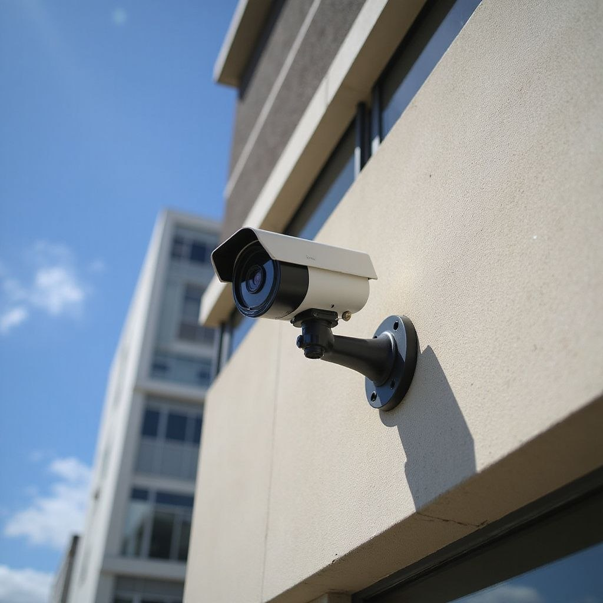

La technologie au service
de votre tranquillité.
Digital Bâtiment accompagne vos projets de sécurité électronique et de confort connecté en Côte d’Ivoire.

Sécurité électronique · Photo d’illustrationVotre bâtiment.
Vos usages.
La bonne solution.
Les besoins d’une maison, d’un commerce ou d’un site industriel sont différents. Notre démarche commence par votre contexte : ce que vous souhaitez protéger, vos accès et vos habitudes.
Caméras, visiophones, alarmes et clôtures électriques composent une offre pour renforcer la sécurité des lieux de vie et de travail.
Rencontrons votre projetDe la clarté, à chaque étape.
Écouter votre besoin
Comprendre vos priorités pour orienter le choix des équipements.
Adapter la solution
Prendre en compte la configuration du site et les conditions d’utilisation.
Expliquer les usages
Vous aider à comprendre le fonctionnement et les possibilités de votre installation.
Un même objectif :
votre sérénité.
Particuliers, entreprises, industriels et collectivités en Côte d’Ivoire.
Vous écouter
Un premier échange pour comprendre vos besoins et vos priorités.
Étudier votre site
Les accès, les zones à couvrir et les contraintes guident le choix.
Installer votre solution
Une installation adaptée à la configuration retenue.
Vous accompagner
Des explications pour prendre en main vos équipements.
Et si votre projet commençait
par une conversation ?
Parlez-nous de votre site et de vos priorités. Nous vous aidons à définir votre besoin.